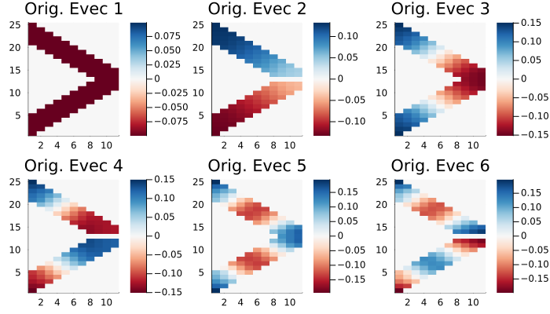
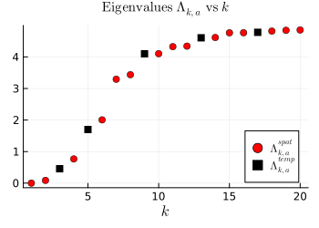
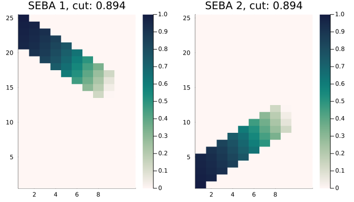

Nonmultiplex temporal networks
In the previous section we looked at spectral partitions of multiplex networks. The same instances can be extended to nonmultiplex types. Here an example of a staircase graph is presented, which is non-multiplex in nature and can be constructed via the BlockGraphNonMultiplex instance as follows,
η = 0.8
list = [2,1]
clusters = [[Array(1:5), Array(6:20), Array(21:25)],
[Array(1:10), Array(11:20)]] # you can ignore this line
degrees = [[4,6,4],
[6,6]] # Ignore this line
evolve = 1
block = BlockGraphNonMultiplex(25, 10, list, η, clusters, degrees, evolve)
W2 = block() |> Vector{Matrix{Float64}}The network consists of 25 spatial vertices. The set of spatial vertices $\hat {\mathcal V} := \bigcup_{t=1}^T\{x: (t,x)\in\mathcal{V}\}$ where $\mathcal V$ is the set of spacetime vertices present in the nonmultiplex network. The network has $10$ time steps.
One then uses the instances MultilayerGraph, SpectralPartition and SEBAPartition to construct and analyse spacetime partitions. These functions naturally extend to nonmultiplex network types.
To compute spectral partitions using SpectralPartition, one must compute the diffusion parameter $a$, which is done by default using SpatTempMatching. Although this may also work with nonmultiplex networks, it is advisable to use RayleighBalancing(x) where x is an appropriately chosen eigenvalue index for Rayleigh balancing.
mlgraph_nonmultiplex = MultilayerGraph(W2, connect = NonMultiplexCompressed())
partition_nonmultiplex = SpectralPartition(mlgraph_nonmultiplex, compute_a = RayleighBalancing(3)) # Rayleigh balancing on third eigenvalue
seba_part_nonmultiplex = SEBAPartition(partition_nonmultiplex,[2,])Similar to before, one can plot eigenvectors, eigenvalues and SEBA vectors.
plot(plot(partition_nonmultiplex)[1][1:6]...)
plot(plot(partition_nonmultiplex)[2])
plot(plot(seba_part_nonmultiplex)...)  